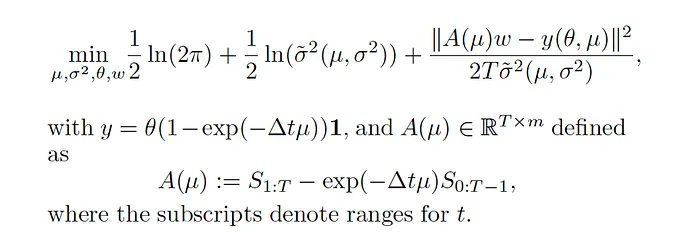

Motivated by the industry practice of pairs trading and long/short equity strategies, we study an approach that combines statistical learning and optimization to construct portfolios with mean-reverting price dynamics.
Our main objectives are:
- Design a portfolio with mean-reverting price dynamics, with parameters estimated by maximum likelihood;
- Select portfolios with desirable characteristics, such as high mean reversion;
- Build a parsimonious portfolio, i.e. find a small subset from a larger collection of assets for long/short positions.
In this article, we present the full problem formulation and discuss a specialized algorithm that exploits the problem structure. Using historical price data, we illustrate the method in a series of numerical examples .
Problem Formulation
Given historical data for m assets observed over T time-steps. Our main goal is to find the vector w, the linear combination of assets that comprise our portfolio, such that the corresponding portfolio price process best follows an OU process. The likelihood of an OU process observed over T time-steps is given by
A major feature of our joint optimization approach is that we simultaneously solve for the optimal portfolio and corresponding parameters for maximum likelihood.
Minimizing the negative log-likelihood results in the optimization problem
